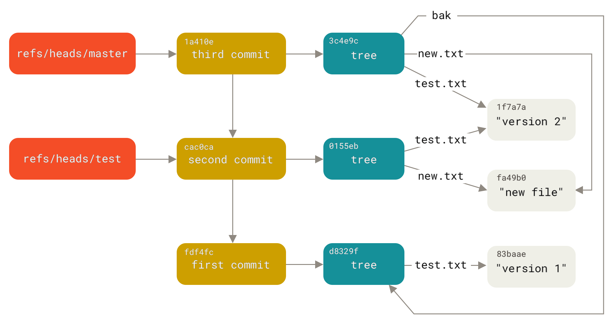

10.3 Git の内部-Git References
Git References
If you were interested in seeing the history of your repository reachable from commit, say, 1a410e, you could run something like git log 1a410e to display that history, but you would still have to remember that 1a410e is the commit you want to use as the starting point for that history.
Instead, it would be easier if you had a file in which you could store that SHA-1 value under a simple name so you could use that simple name rather than the raw SHA-1 value.
In Git, these simple names are called “references” or “refs”; you can find the files that contain those SHA-1 values in the .git/refs directory.
In the current project, this directory contains no files, but it does contain a simple structure:
$ find .git/refs
.git/refs
.git/refs/heads
.git/refs/tags
$ find .git/refs -type fTo create a new reference that will help you remember where your latest commit is, you can technically do something as simple as this:
$ echo 1a410efbd13591db07496601ebc7a059dd55cfe9 > .git/refs/heads/masterNow, you can use the head reference you just created instead of the SHA-1 value in your Git commands:
$ git log --pretty=oneline master
1a410efbd13591db07496601ebc7a059dd55cfe9 Third commit
cac0cab538b970a37ea1e769cbbde608743bc96d Second commit
fdf4fc3344e67ab068f836878b6c4951e3b15f3d First commitYou aren’t encouraged to directly edit the reference files; instead, Git provides the safer command git update-ref to do this if you want to update a reference:
$ git update-ref refs/heads/master 1a410efbd13591db07496601ebc7a059dd55cfe9That’s basically what a branch in Git is: a simple pointer or reference to the head of a line of work. To create a branch back at the second commit, you can do this:
$ git update-ref refs/heads/test cac0caYour branch will contain only work from that commit down:
$ git log --pretty=oneline test
cac0cab538b970a37ea1e769cbbde608743bc96d Second commit
fdf4fc3344e67ab068f836878b6c4951e3b15f3d First commitNow, your Git database conceptually looks something like this:

図 150. Git directory objects with branch head references included
When you run commands like git branch <branch>, Git basically runs that update-ref command to add the SHA-1 of the last commit of the branch you’re on into whatever new reference you want to create.
The HEAD
The question now is, when you run git branch <branch>, how does Git know the SHA-1 of the last commit?
The answer is the HEAD file.
Usually the HEAD file is a symbolic reference to the branch you’re currently on. By symbolic reference, we mean that unlike a normal reference, it contains a pointer to another reference.
However in some rare cases the HEAD file may contain the SHA-1 value of a git object. This happens when you checkout a tag, commit, or remote branch, which puts your repository in "detached HEAD" state.
If you look at the file, you’ll normally see something like this:
$ cat .git/HEAD
ref: refs/heads/masterIf you run git checkout test, Git updates the file to look like this:
$ cat .git/HEAD
ref: refs/heads/testWhen you run git commit, it creates the commit object, specifying the parent of that commit object to be whatever SHA-1 value the reference in HEAD points to.
You can also manually edit this file, but again a safer command exists to do so: git symbolic-ref.
You can read the value of your HEAD via this command:
$ git symbolic-ref HEAD
refs/heads/masterYou can also set the value of HEAD using the same command:
$ git symbolic-ref HEAD refs/heads/test
$ cat .git/HEAD
ref: refs/heads/testYou can’t set a symbolic reference outside of the refs style:
$ git symbolic-ref HEAD test
fatal: Refusing to point HEAD outside of refs/Tags
We just finished discussing Git’s three main object types (blobs, trees and commits), but there is a fourth. The tag object is very much like a commit object — it contains a tagger, a date, a message, and a pointer. The main difference is that a tag object generally points to a commit rather than a tree. It’s like a branch reference, but it never moves — it always points to the same commit but gives it a friendlier name.
As discussed in Gitの基本操作, there are two types of tags: annotated and lightweight. You can make a lightweight tag by running something like this:
$ git update-ref refs/tags/v1.0 cac0cab538b970a37ea1e769cbbde608743bc96dThat is all a lightweight tag is — a reference that never moves.
An annotated tag is more complex, however.
If you create an annotated tag, Git creates a tag object and then writes a reference to point to it rather than directly to the commit.
You can see this by creating an annotated tag (using the -a option):
$ git tag -a v1.1 1a410efbd13591db07496601ebc7a059dd55cfe9 -m 'Test tag'Here’s the object SHA-1 value it created:
$ cat .git/refs/tags/v1.1
9585191f37f7b0fb9444f35a9bf50de191beadc2Now, run git cat-file -p on that SHA-1 value:
$ git cat-file -p 9585191f37f7b0fb9444f35a9bf50de191beadc2
object 1a410efbd13591db07496601ebc7a059dd55cfe9
type commit
tag v1.1
tagger Scott Chacon <schacon@gmail.com> Sat May 23 16:48:58 2009 -0700
Test tagNotice that the object entry points to the commit SHA-1 value that you tagged. Also notice that it doesn’t need to point to a commit; you can tag any Git object. In the Git source code, for example, the maintainer has added their GPG public key as a blob object and then tagged it. You can view the public key by running this in a clone of the Git repository:
$ git cat-file blob junio-gpg-pubThe Linux kernel repository also has a non-commit-pointing tag object — the first tag created points to the initial tree of the import of the source code.
Remotes
The third type of reference that you’ll see is a remote reference.
If you add a remote and push to it, Git stores the value you last pushed to that remote for each branch in the refs/remotes directory.
For instance, you can add a remote called origin and push your master branch to it:
$ git remote add origin git@github.com:schacon/simplegit-progit.git
$ git push origin master
Counting objects: 11, done.
Compressing objects: 100% (5/5), done.
Writing objects: 100% (7/7), 716 bytes, done.
Total 7 (delta 2), reused 4 (delta 1)
To git@github.com:schacon/simplegit-progit.git
a11bef0..ca82a6d master -> masterThen, you can see what the master branch on the origin remote was the last time you communicated with the server, by checking the refs/remotes/origin/master file:
$ cat .git/refs/remotes/origin/master
ca82a6dff817ec66f44342007202690a93763949Remote references differ from branches (refs/heads references) mainly in that they’re considered read-only.
You can git checkout to one, but Git won’t point HEAD at one, so you’ll never update it with a commit command.
Git manages them as bookmarks to the last known state of where those branches were on those servers.